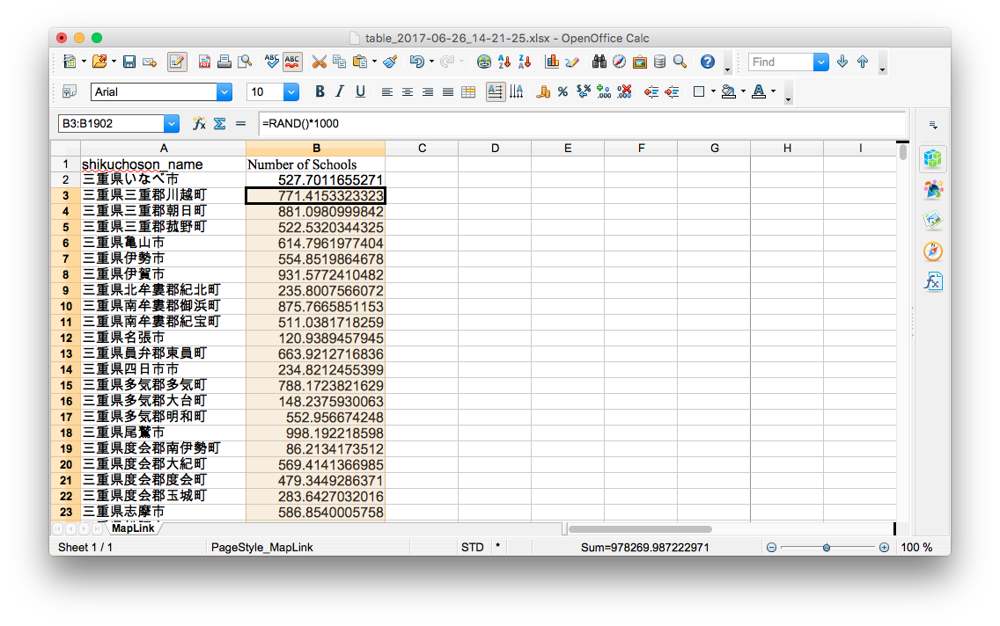
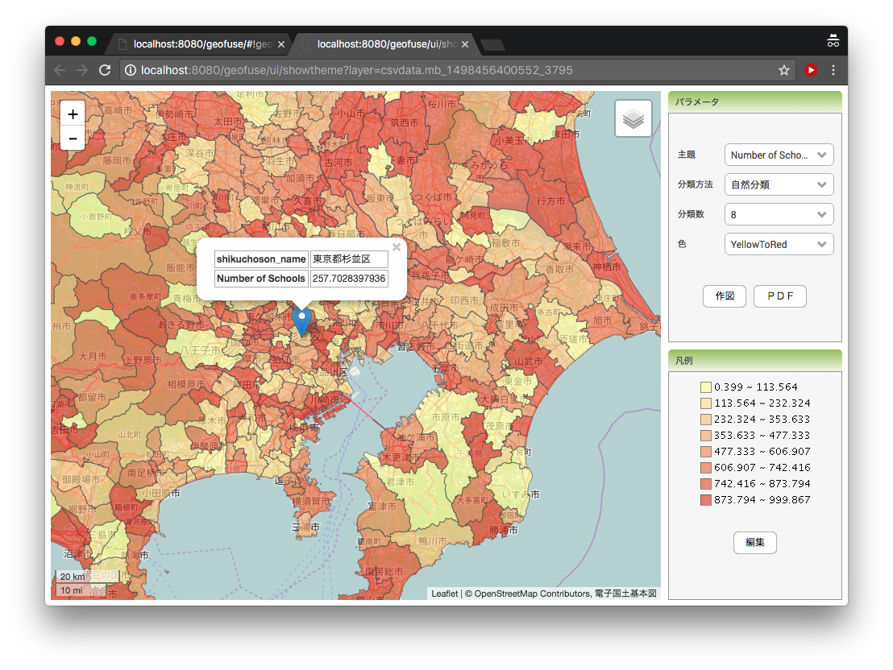
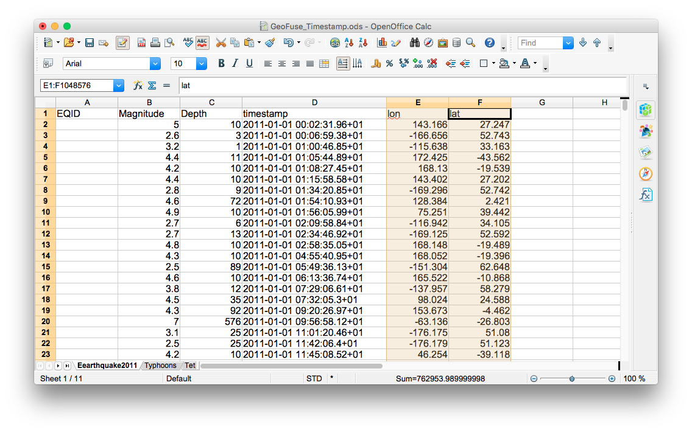
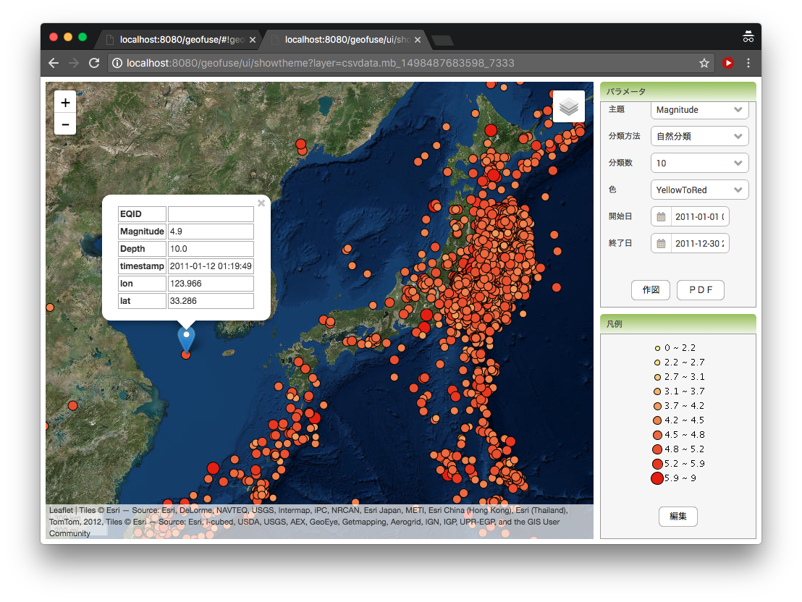

クイックチュートリアル
データを入力する
以下はGeofuseにデータを入れて視覚化するまでの手順です。
- GeoFuseの「リンク用データ」メニューから地図用のリンクデータをダウンドードしてExcelやOpenOfficeで開きます。

- 列名を追加して、サンプルデータを配置します。この例では「学校数」が使用され、Excel関数を使ったランダムなデータが配置されています。
=RAND() * 1000
コピーして列全体に貼り付けます。


- 選択したデータをGeoFuse入力ページに貼り付け、レイヤー名として「Test Map」を追加します。


タイムスタンプ（日付・時刻）つきのデータを入力する
GeoFuseには、タイムスタンプを処理し、指定されたデータ/時間に基づいてマップをフィルタリングする機能があります。ただし、これを行うには、タイムスタンプデータに「timestamp」という名前の列があり、入力データの形式は「YYYY/MM/DD HH:MM:SS」または「YYYY-MM-DD HH:MM:SS」である必要があります。タイムスタンプ付きのデータをGeoFuseに入力する手順は以下の通りです。
- 上記のスプレッドシートを使用して、列名として「timestamp」を追加し、行全体を「YYYY/MM/DD HH:MM:SS」形式にします。OpenOfficeでは、列全体を選択し、[書式]-> [セル]メニューオプションに移動してこれを行います。

- サンプルのタイムスタンプデータは、Excel関数を使用して作成できます。
=NOW() - B2
次に、列全体をコピーして貼り付けます。

- データ全体が再度コピーされ「Test Data with Timestamp」というレイヤー名でGeoFuseの入力ページに貼り付けられます。

- 作成されたマップを表示するときに、指定された日付内のデータのみを表示できるようにする[開始日]オプションと[終了日]オプションがあります。これらのオプションは、送信されたデータにタイムスタンプが含まれる場合にのみ含まれます。

X、Y（経度/緯度）データの入力
GeoFuseには、すでにX、Y（経度、緯度）ポイントがあるデータを処理する機能もあります。ただし、GeoFuseがX、Yポイントデータを受け入れるためには、いくつかのルールに従う必要があります。最初に、列名はXポイントでは「lon」、Yポイントでは「lat」にする必要があります。次に、「lon」列と「lat」列はデータの最後の列でなければなりません。そして最後に、X、Yポイントは、GPSシステムで一般的に使用される投影法であるWGS84投影法である必要があります。以下は、X、Yポイントでデータを入力するための手順です。
- 「lon」列と「lat」列を持つワークシートを作成します。これらの列には、それぞれXとYポイントが含まれ、最後の列として

- データをコピーしてGeoFuse入力ページに貼り付けます。

